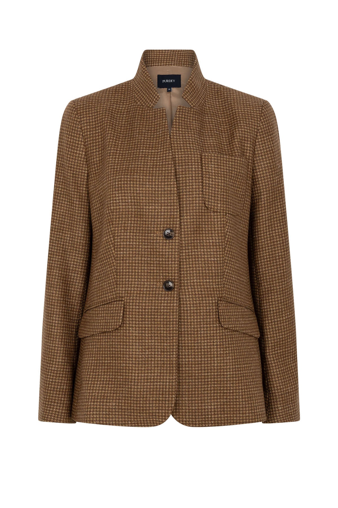
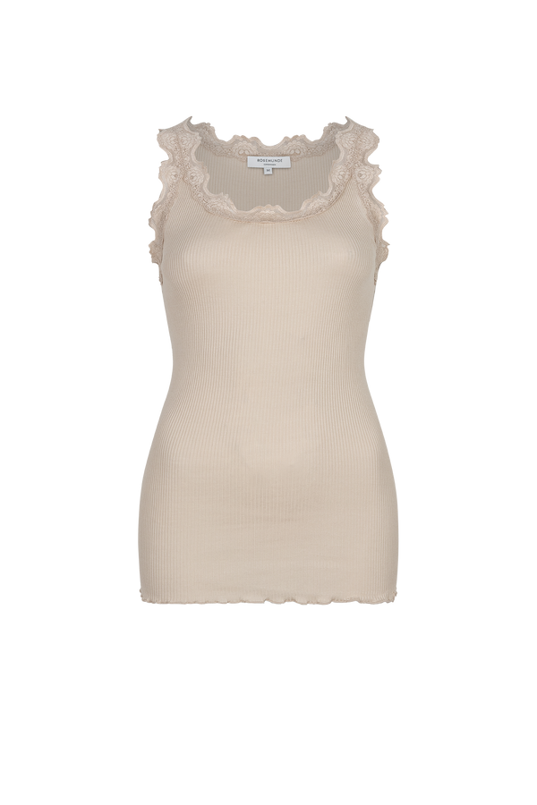
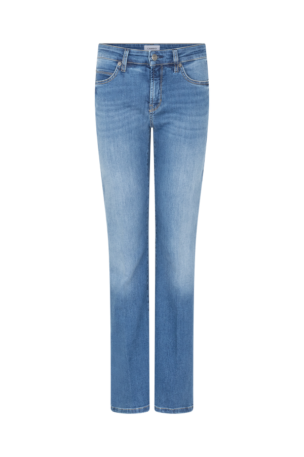

Purdey Oisterwijk
Dorpsstraat 18 · zondag 12:00–17:00 (1e zondag)
Op voorraad demo

1 / 4Purdey
€ 279,95
De Iris Blazer van Purdey in camel ruit geeft elke look verfijnde souplesse. Het rechte silhouet op heuplengte voelt prettig en kleedt mooi af — vrouwelijk en moeiteloos.
Voorbeeldvoorraad · demo
Purdey Oisterwijk
Dorpsstraat 18 · zondag 12:00–17:00 (1e zondag)
Purdey Den Bosch
Bekijk winkel voor adres en openingstijden
Dit prototype gebruikt voorbeeldvoorraad. Er wordt niets automatisch gereserveerd; de winkel bevestigt de actuele beschikbaarheid.
Uw pasbezoek voorbereid
Neem de gekozen maat mee naar de winkelpagina en bel desgewenst vooraf. Zo blijft de belofte netjes: wel een gerichte winkelintentie, geen fictieve reservering.
Recht silhouet op heuplengte, lange mouwen, kraag, knoopsluiting en paspelzakken. Raadpleeg de actuele Purdey-PDP voor volledige samenstelling en producttransparantie.
Eén look, twee verkooproutes:
online meenemen of gericht passen.
Shop the look
De combinatie staat niet alleen ter inspiratie: kies per item de maat en voeg de set samen toe.
Purdey

Rosemunde

Cambio
Voorraadcontrole per item en maat wordt in een pilot aan Purdey's echte voorraad gekoppeld.
Purdey in 30 winkels
De winkel hoeft geen uitweg uit de webshop te zijn. Met maat, product en look al gekozen wordt een winkelbezoek een concrete volgende stap.
Vind uw Purdey-winkel